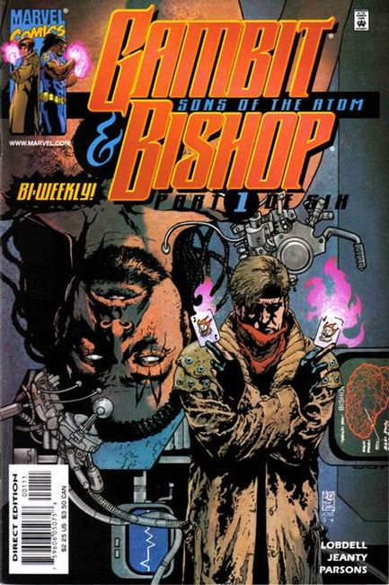
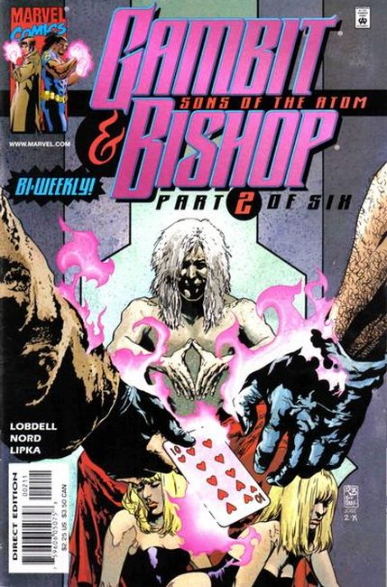
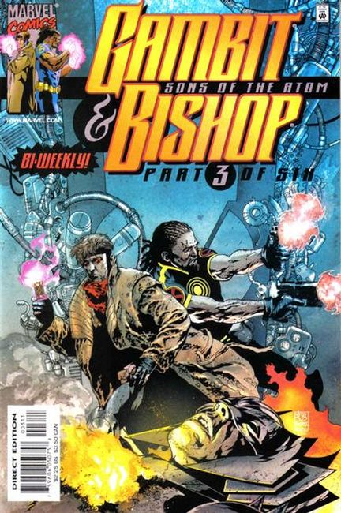
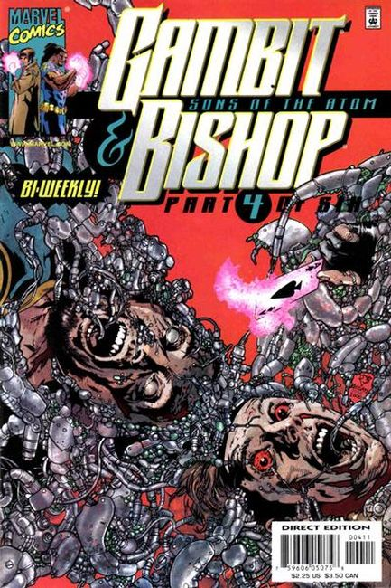
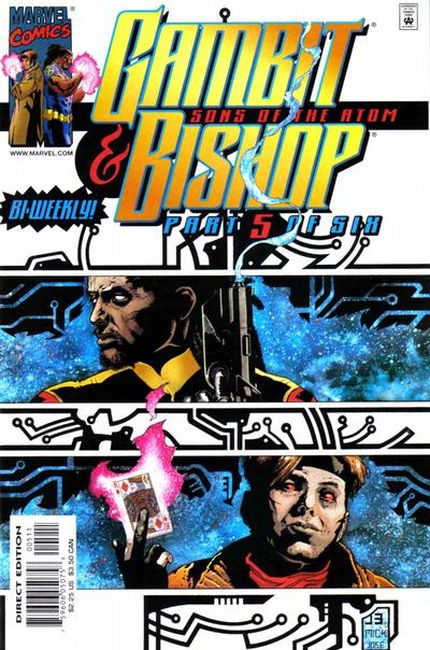
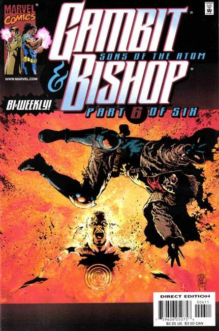

Gambit and Bishop Sons of the Atom






Series: 6 issues 2001
Publisher: Marvel
Cover: J. H. Williams III (J3)
Script: Scott Lobdell, Joe Pruett
Illustrations: Georges Jeanty, Sean Parsons, Kevin Tinsley
Bishop has been captured, and it's up to everyone's favorite ragin' Cajun to free him! There's only one problem: Bishop's captors are the X-Men! What dark forces are behind the X-Men's villainy? And can Gambit survive their combined power?